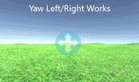
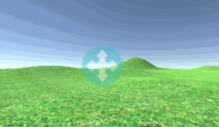
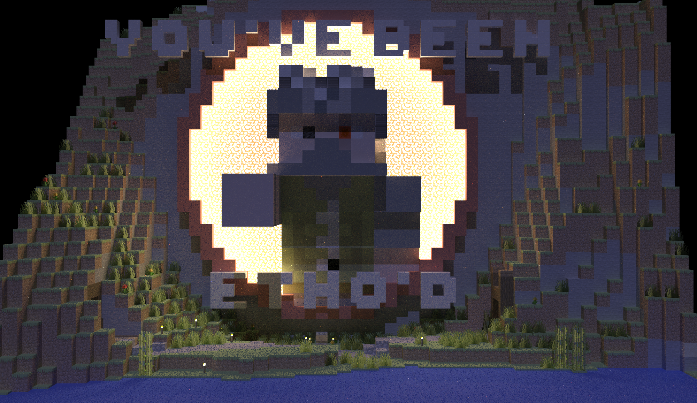

|
|
The primary goal of this project was to extend CS184's path tracer to support beautifully rendering minecraft worlds and small builds by importing minecraft scenes into the path tracer. Our first task was to create a proof of concept and import all the diffuse (base color) materials and geometry into our pathtracer. We used assimp to load in the files, vertices, and textures. To load in the geometry and textures we successfully refactored much of the projects scene creation system, worked on UV mapping, and developed many other bells and whistles needed to use textures in the pathtracer effeciently. From here, we worked on loading in full scenes with lighting and camera through COLLADA files, and which required rewriting the pathtracers camera class. With the much of the work done for to be able to load in large scenes, cameras, lights, textures, and materials, we moved on to Physically Based Rendering. Minecraft has 4 different PBR maps: Normal Map, Roughness Map, Emissive Map, and a Metallic map. We incorporated all of these into one large PBRBSDF which is efficiently created for each pixel on a texture and shared across an entire mesh. Now we can render some pretty images! We used emissive BSDF to model emissive materials, and we combined microfacet BSDF with diffuse BSDF to form a mixed BSDF that can model partially metallic texture. We also applied normal map so that the objects in the scene could have more details.
We started by making sure that we can load in geometry and textures. To do this, we used both the course's
COLLADA file, and our own OBJ and MTL files. To do so, we use a program called Mineways to export Minecraft
worlds as OBJ and MTL files. Later, we can bring these files into Blender to re-export them as COLLADA files,
and setup the camera, lights, etc. So, we used the courses Cornell Box model, and brought our minecraft model
together, loading separate things from both. With this, we could work on the main work needed, UV mapping and
textures for the pathtracer. At first, we simply returned a diffuseBSDF with the color of the sampled pixel on
the texture at the point of intersection. We also had to make sure to sample the texture's alpha values to make
sure we don't count intersections where the texture is completely clear. In order to achieve all this, we
created a new Primitive, called Textured Triangle, which holds texture coordinates, the texture, and has
a different intersection function in order to calculate the exact point of intersection and return the correct
color. We used Open Asset Import Library assimp to load our OBJ and MTL files, and later we used this to
load in the full COLLADA file. At this step, we also rewrote the TexturedTriangles draw() function
to use textures, allowing us to get a rasterized preview of the scene! This was super useful throughout the
project.
In order to load the Camera, geometry, and lighting from one COLLADA file, some more major changes had to be
made. COLLADA files, and assimp consequently, don't just store the vertices in a global space. Rather, their is
a heirarchy with transforms for each layer, which are relative to the transforms above them. So in order to
import anything into the scene, we needed to traverse this heirarchy, and compute the transform at each layer.
We could then use this to transform our camera, lights, and geometry into the correct position. This also
necessitated a rewrite of the camera class, with the goal of having our camera exactly match the camera setup in
Blender when we are creating the COLLADA files, and being able to control the camera more intuitively. In order
to do this, we setup a new system for the camera. Rather than using phi, theta and
targetPos to control where the camera is looking, we use viewDirection and
upDirection. This allowed us to more easily import the camera into the desired position, but also
required rewriting the functions to rotate the camera around, which was quite interesting! We have methods to
rotate on the roll, yaw, and pitch axis separately, and afterwards we compute the new c2w vector from the
upDirection and viewDirection. Additionally, we make sure to always rotate on the
yaw-axis before the pitch-axis, and follow the mantra "Pitch Locally, Yaw Globally", in order to avoid camera
roll. This took a long time to figure out but was an interesting lesson in 3D camera movement!
|  |  |
One of the largest problems encountered during the first part of the project was refactoring the code to be able to import geometry and scene details as we liked. We also needed to do a lot of refactoring to allow the camera to control the window's aspect ratio, rather than the window controlling the camera's FOV. This was a monumental task, but was necessary to be able for our goal in having a camera that matches Blender. One challenge for PBR was combining the different maps together. Among the these maps, the emissive map and the normal map were independent of other maps and we handled them separately, but the rest are not. To combine the microfacet BSDF and the diffuse BSDF together for sampling, we flip a coin to decide which one to use. We also adjusted the probablistic distribution of the sample so that the results looks more natural.
One issue we ran into was Minecraft's Metallic Maps. From Microsoft, we know that metallic maps are are a grayscale texture which at each pixel, determines how metallic the block is. However, this concept doesn't really fit into the Microfacet BSDF model, and there is an extreme lack of documentation on how Microsoft and NVIDIA actually use the metallic map themselves. The key problem is that in our Microfacet model, we use a Complex IOR to represent different metals. Which one should be used to represent all these different pixels on the Metallic map? No information is provided as to what metal should be used at a certain pixel, and there is no method of converting from a diffuse color to the complex IOR needed to represent it. So, we decided to use a bunch of known complex IOR values and default to those. Anything that contains the world "gold", for example, uses gold's IOR. This is done for Copper and Iron as well. However, this can't catch all cases. For example, look at the picture of the crafting table below.
|
|
Notice the metallic look of the tools on the side! These are the cool details that make for beautiful images. In order to implement these, we continue with using a known set of complex IOR values, but map that to a range of RGB values. For each metallic pixel on a texuture that doesn't contain a keyword, we find whichever RGB and IOR pair is closest to the sampled diffuse color at that pixel. This allows for small details, like copper or iron accents on various textures to be rendered correctly!
There were many considerations to take into account when choosing a file format. Our first implementation used OBJ and MTL for the geometry, and COLLADA for the lights and camera. However, we wanted one file to rule them all! This discarded OBJ and MTL off that bat, as they didn't support camera or lights. We looked into several other options, like COLLADA, FBX, USD, and GLTF 2.0. Here, we see some of the real-world problems with different formats. For example, assimp doesn't support all of GLTF's extensions, which meant no lights for us. USD sounds like it could be great, but assimp couldn't open that either! Since COLLADA doesn't support PBR materials, this only left us with FBX. However, after implementing it, we found the assimp's FBX loader has some bugs in it. This left us with COLLADA. Luckily, since Minecraft textures have a smart naming scheme, we realized we didn't need COLLADA to support PBR. The PBR textures in minecraft are all named identically to their diffuse texture, except with an additional suffix. We could load the diffuse texture path through the COLLADA file and look for the PBR textures ourselves! assimp's COLLADA implementation still had some bugs though. For example, it couldn't properly parse area lights from COLLADA files, and read them as point lights instead. We had to develop some work arounds for this, but it was a good lesson in balancing what makes sense in theory, verse real-world issues and complications.
The first part of the project was a great experience in refactoring code and how 3D file formats work. It was
also a great lesson in the upsides and downsides of using open-source libraries, and how to read proper
documentation and work with something you haven't developed yourself. Additionally, we learned more about
implementing UV mapping and textures in a pathtracer.
One of the most interesting parts of the project was implementing the new camera! We had no idea that
programming 3D movement and rotation could be so complicated, and because it was difficult to understand our
issues, they were hard to fix. However, we learned alot about movement and rotation in 3D space as we worked on
getting our camera to move intuivetly, which isn't as simple as you would think!
After implementing the PBR components, we learned how to mix different BSDFs together given relevant parameters.
We learned about several different approaches, including using a probabilistic model, and combining BSDFs
together mathematically.


|  |